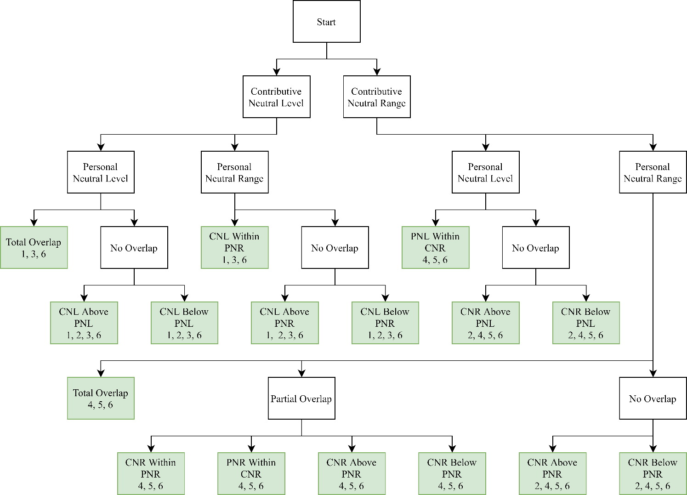
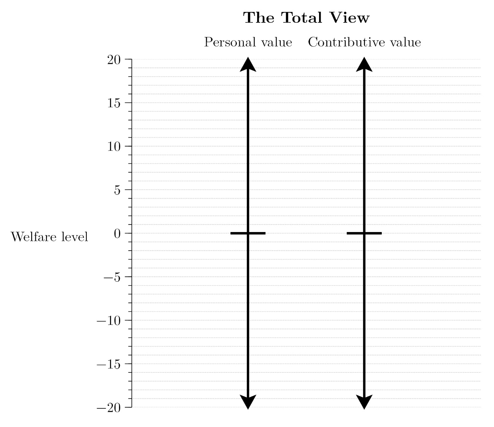
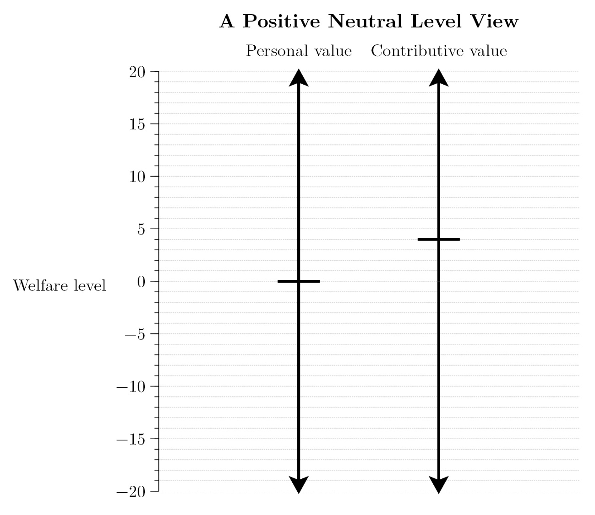
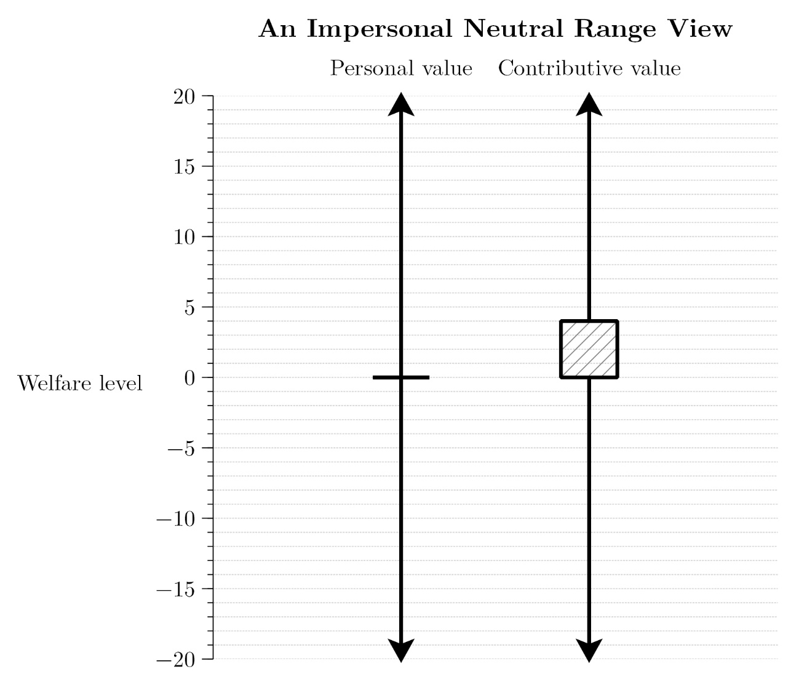
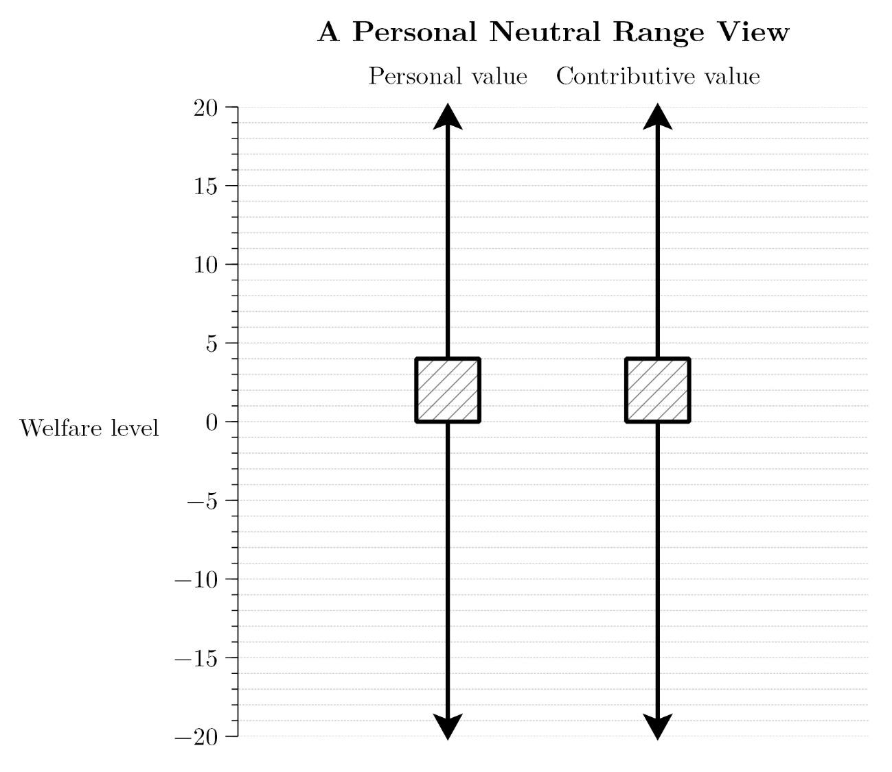
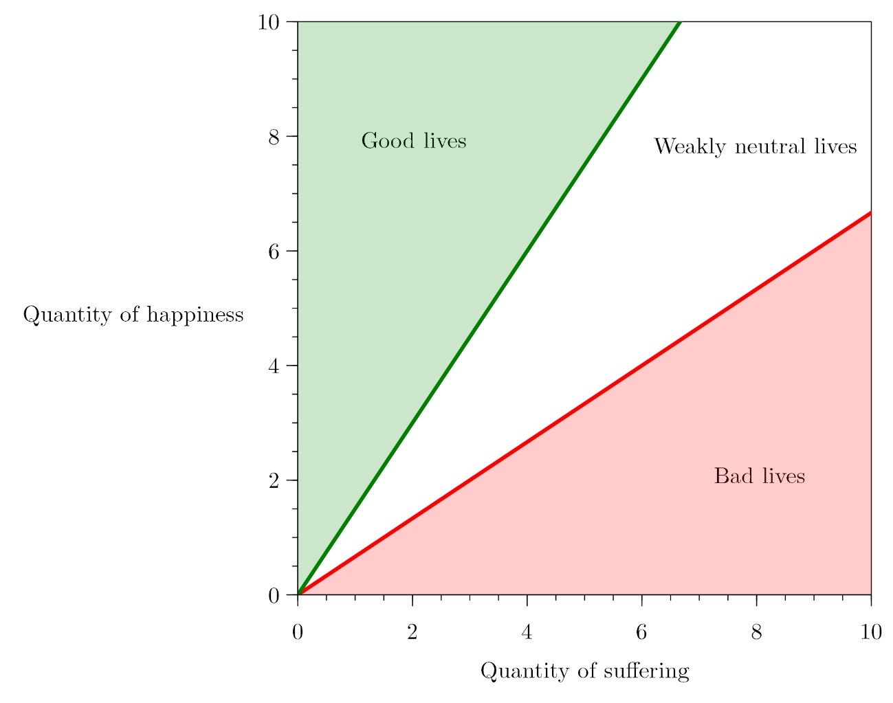
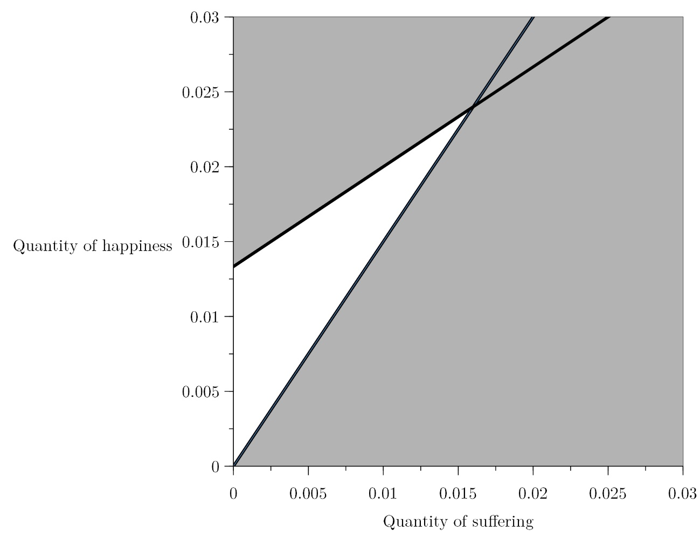

Critical Levels, Critical Ranges, and Imprecise Exchange Rates in Population Axiology
Abstract
According to critical-level views in population axiology, an extra life improves a population if and only if that life’s welfare level exceeds some fixed “critical level.” An extra life at the critical level leaves the new population equally good as the original. According to critical-range views, an extra life improves a population if and only if that life’s welfare level exceeds some fixed “critical range.” An extra life within the critical range leaves the new population incommensurable with the original. In this paper, I sharpen some old objections to these views and offer some new ones. Critical-level views cannot avoid certain repugnant and sadistic conclusions. Critical-range views imply that lives featuring no good or bad components whatsoever can nevertheless swallow up and neutralize goodness and badness. Both classes of view imply discontinuities in implausible places. I then offer a view that retains much of the appeal of critical-level and critical-range views while avoiding the above pitfalls. On the Imprecise Exchange Rates View, various exchange rates—between pairs of goods, between pairs of bads, and between goods and bads—are imprecise. This imprecision is the source of incommensurability between lives and between populations.
1. Introduction
How do we determine whether one population is at least as
good as another? Here is one easy answer. We use a number to
represent each person’s welfare — how good their life is for
them — with the size of the number proportional to how good
their life is. Positive numbers represent good lives,
negative numbers represent bad lives, and zero represents
lives that are neither good nor bad. We then sum these
numbers to get the value of each population. A population
The Total View implies that we can improve populations by adding lives that are barely worth living, and some find this implication distasteful. We can avoid this implication by first subtracting some positive constant from the number representing a person’s welfare and then summing the results. Call these population axiologies Neutral-Level Views.
Neutral-Level Views cannot account for two intuitions
that many people find appealing. The first is that there is
a range of welfare levels such that adding lives at
these levels makes a population neither better nor worse.
The second is that populations of different sizes may be
incommensurable, so that neither population is
better than the other and yet nor are they equally good. In
that case, we might prefer to calculate the values of each
population on a range of neutral levels. We can then claim
that
Neutral-Level and Neutral-Range Views fall within the more general class of Neutral-Set Views. I offer a characterisation and taxonomy of these views below, along with six objections that tell against various views in this taxonomy. Some views imply Repugnant or Sadistic Conclusions. Other views make neutrality implausibly greedy. Each view implies that certain small differences in welfare correspond to worryingly large differences in how a life affects the value of a population, and no view can account for the incommensurability between lives and same-size populations without extra theoretical resources.
I then offer a view that retains much of the appeal of Neutral-Set Views while avoiding many of the above pitfalls. The Imprecise Exchange Rates View has its start in the observation that there are often no precise truths about whether it is worth undergoing some bad for the sake of some good. It makes sense of this observation by claiming that various exchange rates between goods and bads are imprecise. This imprecision renders certain combinations of goods and bads incommensurable with other combinations. The view thus provides a natural explanation of incommensurability between lives and same-size populations, avoids the Sadistic Conclusion along with the most concerning instances of Repugnance and Greediness, and has many other advantages besides.
I characterise and taxonomise Neutral-Set Views in Section 2, and object to them in Section 3. I introduce the Imprecise Exchange Rates View in Section 4, canvas its advantages in Section 5, and address some objections in Section 6. I sum up in Section 7.
2. Neutral-Set Views
Foundational to Neutral-Set Views is the notion of a life. I follow Broome (2004, 94–95) in loosely defining a life as ‘how things are for a person,’ where this phrase is understood to include all those things that can affect that life’s welfare, how good the life is for the person living it. This definition jars somewhat with our ordinary understanding of a life. Depending on our theory of welfare, it might count events occurring after a person’s death as part of their life. But for our purposes, this terminological strangeness is of little consequence. The definition also allows that more than one person can live the same life. This possibility simplifies the ensuing discussion.
Advocates of Neutral-Set Views assume that welfare is measurable on an interval scale and interpersonally comparable. Measurability on an interval scale allows us to talk meaningfully about ratios of differences in welfare, so that claims like the following are meaningful: ‘The difference in welfare between Ada’s life as an artist and Ada’s life as a baker is twice the size of the difference in welfare between Ada’s life as a baker and Ada’s life as a consultant.’ Interpersonal comparability allows us to compare the welfare of different people, so that claims like the following are meaningful: ‘Ada’s life as an artist contains more welfare than Bob’s life as a baker.’ This claim is equivalent to the claim that ‘Ada’s life as an artist is personally better than Bob’s life as a baker.’ In other words, ‘Ada’s life as an artist is better for her than Bob’s life as a baker is for him.’ I mostly use the terminology of personal betterness below.
Most advocates of Neutral-Set Views claim that each
life’s welfare can be represented by a real-valued function
Neutral-Set Views typically go on to sort lives into absolute categories. Which category a life falls in depends on how it compares to some standard: a life is personally good iff it is better than the standard, personally bad iff it is worse than the standard, and personally neutral iff it is neither better nor worse than the standard. The category of personally neutral lives can be refined further: a life is personally strictly neutral iff it is equally good as the standard and personally weakly neutral iff it is incommensurable with the standard. The standard in question is defined differently by different authors. Some define it as nonexistence (Arrhenius and Rabinowicz 2015a). Others define it as a life constantly at a neutral level of temporal welfare (Broome 2004, 68; Bykvist 2007, 101). Still others define it as a life without any good or bad components: features of a life that are good or bad for the person living it (Arrhenius 2000b, 26). With one caveat, Neutral-Set Views are compatible with each definition.The caveat is that PNR-Views — explained below — cannot be paired with the latter two definitions. PNR-Views claim both that all lives are personally commensurable with each other, and that some lives are personally incommensurable with the standard. That means that the standard cannot be a life. I thank an anonymous reviewer for pointing this out.
So much for comparing lives. Comparing populations requires more assumptions. The first thing to note is that populations are compared with respect to general goodness, rather than personal goodness. Broome’s Principle of Personal Good (2004, 120) links the two:
The Principle of Personal Good
Take two populations
and that feature all the same people. If each person’s life in is equally personally good as their life in , then and are equally generally good. If each person’s life in is at least as personally good as their life in , and some person’s life in is personally better than their life in , then is generally better than .When context makes it obvious that I am comparing populations, I drop the ‘generally’ from such comparisons.
This principle implies that only facts about the identities of existing people and their welfare levels are evaluatively significant. Factors like the beauty of the world matter only derivatively if they matter at all. The Principle of Personal Good simplifies the presentation of Neutral-Set Views but is not strictly necessary. Advocates can instead append an ‘all else equal’ clause to their other claims, specifying that all facts besides identities and welfare levels are to be held fixed.
A second assumption of Neutral-Set Views is Anonymity:
Anonymity
Any two populations that feature the same number of lives at each welfare level are equally good.
This principle implies that identities are evaluatively
insignificant. Every person’s welfare matters equally, so a
population cannot be made better or worse by changing the
identity associated with a given welfare level. Anonymity
allows us to represent each population with a distribution —
a finite, unordered list of welfare levels allowing
repetitions — so that one population is at least as good as
another iff its distribution is at least as good.
Henceforth,
This notation is useful in clarifying the notion of a
life’s contributive value relative to a population:
how a life contributes to the general goodness of a
population. A life
A third assumption of Neutral-Set Views is Transitivity:
Transitivity
For any populations
, , and , if is at least as good as , and is at least as good as , then is at least as good as .
A fourth is Neutral-Set:
Neutral Set
For at least one possible population, there is a set of welfare levels such that lives at these welfare levels are contributively neutral relative to that population. Lives at welfare levels above (below) the set are contributively good (bad) relative to that population.
And a fifth is Separability over Lives:
Separability over Lives
For any populations
, , and , is at least as good as iff is at least as good as .
This principle implies that the neutral set is the same
for all
populations.Here is how. Let
A sixth assumption is Archimedeanism about Populations:
Archimedeanism about Populations
For any life
, any contributively good (bad) life , and any number , there is some number such that a population of lives at is better (worse) than a population of lives at .Denying this last assumption yields a Lexical View. For discussion of Lexical Views, see Kitcher (2000), Thomas (2018), Nebel (2021), Carlson (forthcoming), and Thornley (forthcoming).
As extant theorems demonstrate, any population axiology
satisfying the above principles is a Neutral-Set
View.See, for example, Blackorby, Bossert, and Donaldson’s Theorem 6.10
(2005, chap. 6), Broome (1991, 70; 2004), Thomas (forthcoming), and
Bossert’s Theorem 3 (forthcoming). On
these views, one or more (possibly transformed) welfare
levels are designated as contributively neutral. The
contributive value of a life
(1)
In what follows, I take
The value of a population
(2)
And a population
Here is an example to illustrate. Suppose we have two
populations,
(3)
(4)
On a Neutral-Set View with a single contributively
neutral level at 0,
The six principles prior to this example constitute the
common core of Neutral-Set Views. The following five
choice-points divide the class. First, a Neutral-Set View’s
contributively neutral set (CNS) can comprise either a
single contributively neutral level (CNL) or multiple
contributively neutral levels, forming a contributively
neutral range
(CNR).Given the Principle of Personal Good, the contributively neutral set
cannot feature any gaps. In other words, there cannot be a non-neutral
level between two neutral levels. I
call the former views CNL-Views and the latter
CNR-Views. CNL-Views claim that lives at the CNL
are contributively strictly neutral, so that any
population
The second choice-point concerns the personally neutral set (PNS). This too can comprise either a single personally neutral level (PNL) or a personally neutral range (PNR). PNL-Views claim that lives at the PNL are personally strictly neutral, so that they are personally equally good as the standard. PNR-Views claim that lives within the PNR are personally weakly neutral, so that they are personally incommensurable with the standard.
The third choice-point is one on which I have already taken a stand. CNR- and PNR-Views can interpret their neutral ranges as ranges of incommensurability (Blackorby, Bossert, and Donaldson 1996), parity (Qizilbash 2018), indeterminacy (Broome 2004), some other value-relation, or any combination of the aforementioned phenomena.Rabinowicz (2009) suggests a zone of parity with indeterminate boundaries. I adopt the language of incommensurability in this paper, but my discussion can be translated into other terms without significant change to its import.
The fourth choice-point concerns the form of the function
The fifth choice-point concerns the relative positions of the CNS and PNS. The options available at this stage depend on the directions taken at the first and second choice-points, so I outline them in Figure 1. The numbers at each terminus indicate which of the objections listed below apply to that view.

Many of the views in this taxonomy have never been advocated in print, but I lay them all out here for the sake of completeness. Four views that have been defended in print are the Total View, a Positive Neutral Level View, an Impersonal Neutral Range View, and a Personal Neutral Range View. I diagram them below. Horizontal lines denote that the corresponding welfare level is personally/contributively strictly neutral. Boxes denote that the corresponding welfare levels are personally/contributively weakly neutral. Welfare levels above (below) the horizontal line or shaded box are personally/contributively good (bad). The numbers are purely illustrative.
First, the Total View:

This view is defended by Tännsjö (2002) and Huemer (2008), amongst others. There is a single overlapping PNL and CNL, so that a life is personally good (bad/strictly neutral) iff it is contributively good (bad/strictly neutral). Any two populations are commensurable.
Second, a Positive Neutral Level View:

Blackorby, Bossert, and Donaldson (2005) and Bossert (forthcoming) defend a Positive Neutral Level View. There is a single CNL above a single PNL, so some personally good lives are contributively bad. Any two populations are commensurable.
Third, an Impersonal Neutral Range View:

A view of this kind is defended by Broome (2004), who interprets the neutral range as a range of indeterminacy, and Rabinowicz in early work (2009). There is a single PNL but a CNR, so the overlap between neutral sets can be partial at most. Here I present a version of the view in which the PNL corresponds to the lowest welfare level in the CNR. On all Impersonal Neutral Range Views, some pairs of populations are incommensurable.
Finally, a Personal Neutral Range View:

Rabinowicz discusses a view of this kind in more recent work (forthcoming) and Gustafsson (2020) defends a view of this form in which there is a personally and contributively neutral range for temporal welfare levels as well as lifetime welfare levels. On Personal Neutral Range Views, there is a PNR and CNR that totally overlap, so a life is personally good (bad/weakly neutral) iff it is contributively good (bad/weakly neutral). Some pairs of populations are incommensurable.
3. Objections to Neutral-Set Views
Many varieties of Neutral-Set View are subject to the same objections. At least three of the following six objections apply to each view in the taxonomy.
3.1. Maximal Repugnance
Any Neutral-Set View on which lives barely worth living are contributively good will imply the Repugnant Conclusion:
Each population of wonderful lives is worse than some population of lives barely worth living. (Parfit 1984, 388)
And any Neutral-Set View on which lives barely worth not living are contributively bad will imply the Mirrored Repugnant Conclusion:
Each population of awful lives is better than some population of lives barely worth not living. (Carlson 1998, 297; Broome 2004, 213; Gustafsson 2020, 85)
Both of these consequences arise because Neutral-Set Views accept Archimedeanism about Populations: a population of enough contributively good (bad) lives can be better (worse) than any other population.
However, as Broome (2004, 213) and Rabinowicz (2009, 406; forthcoming, 79) note, the repugnance of these conclusions is attenuated if a wide range of lives are personally neutral. In that case, lives barely worth living are much better than lives barely worth not living. What makes the Repugnant Conclusion and its mirror troubling is the presumed similarity of lives barely worth living and lives barely worth not living. With that in mind, I define Maximal Repugnance as follows:
There is a life
and a life that is identical but for an extra two hangnail’s worth of pain such that (1) each population of wonderful lives is worse than some population of lives and (2) each population of awful lives is better than some population of lives.
Note that I drop the specification that
Given that an extra two hangnail’s worth of pain suffice to make a life two welfare levels worse, any view in which only one welfare level is contributively neutral will have this consequence. In short, all CNL-Views imply Maximal Repugnance.
3.2. Sadism
This objection requires the introduction of a new distinction. If welfare levels are dense, then for any two welfare levels, there is a welfare level between them. If welfare levels are not dense, then there is at least one pair of welfare levels with no welfare level in between.
Given denseness, any view on which there is no overlap between the CNS and the PNS implies a Sadistic Conclusion. If the CNS is above the PNS, the view implies the original Sadistic Conclusion:
Each population of awful lives is better than some population of personally good lives. (Arrhenius 2000a, 256)
That is because positioning the CNS above the PNS entails that some personally good lives are contributively bad. Given Archimedeanism, each population is worse than a population of enough contributively bad lives.
If the CNS is below the PNS, the view implies the Mirrored Sadistic Conclusion:
Each population of wonderful lives is worse than some population of personally bad lives. (Gustafsson 2020, 85)
That is because positioning the CNS below the PNS entails that some personally bad lives are contributively good. The Archimedean principle does the rest.
If denseness is false, we could endorse a Neutral-Set View on which there is no overlap between the CNS and the PNS and yet no welfare level between the two neutral sets. These kinds of views imply only weaker forms of sadism. If the bottom of the CNS is one welfare level above the top of the PNS, the view implies a Weaker Sadistic Conclusion:
Each population of awful lives is better than some population of personally neutral lives.
If the top of the CNS is one welfare level below the bottom of the PNS, the view implies a Weaker Mirrored Sadistic Conclusion:
Each population of wonderful lives is worse than some population of personally neutral lives.
These conclusions are more plausible than the pair above, but that is faint praise. In fact, comparison with the previous subsection will show that they could equally be called Stronger Mirrored and Stronger Repugnant Conclusions, respectively.I use the words ‘weaker’ and ‘stronger’ rather than ‘weak’ and ‘strong’ to distinguish these conclusions from the Weak Sadistic Conclusion and Strong Repugnant Conclusion that appear in Gustafsson (2020, 86) and Meacham (2012, 270) respectively.
All views with no overlap between the CNS and the PNS imply some form of sadism.
3.3. Strong Superiority Across Slight Differences
Consider a sequence of lives beginning with a
contributively good life
On CNL-Views, each life is either contributively good,
contributively strictly neutral, or contributively bad. That
means that, in our sequence, there is some contributively
good life
We might claim that this implication is of little
concern:
3.4. Strong Noninferiority Across Slight Differences
SSASD might spur us to adopt a CNR-View. On CNR-Views, a
range of lives are contributively weakly neutral. If this
range is wide enough, our
Suppose that all welfare levels
More generally, each contributively weakly neutral life
has positive value relative to some
However, CNR-Views still imply Strong Noninferiority
Across Slight Differences: for some
Consider a new sequence. Each life in this sequence
features a blank period, free of any good or bad components.
We can imagine it as a minute of dreamless sleep. The first
life in the sequence
Intuitively, the first discontinuity in this sequence
occurs between
But CNR-Views must deny at least one of these claims.
Recall that, on CNR-Views, more than one welfare level is
contributively neutral. Therefore, in any sequence with
sufficiently small welfare differences between adjacent
lives, more than one life is contributively weakly neutral.
We can make the welfare differences between adjacent lives
in our
Suppose for illustration that, when the unit of time is
seconds,
We get a mirror of this implication if we instead suppose
that
Nothing hinges on the particular lives chosen to illustrate this dynamic. Any CNR-View will imply that (1) a population consisting of a single straightforwardly-better-than-blank life is not worse than a population consisting of any number of straightforwardly-better-than-blank lives identical but for a slightly smaller quantity of good, or (2) a population consisting of a single straightforwardly-worse-than-blank life is not better than a population consisting of any number of straightforwardly-worse-than-blank lives identical but for a slightly smaller quantity of bad.
3.5. Maximal Greediness
CNR-Views face another difficulty. As Broome points out
(2004, 169–70, 202–5), they imply that contributively weakly
neutral lives can ‘swallow up’ and neutralise goodness and
badness. Here is an illustration of what that means. Suppose
again that all welfare levels between 0 and 4 inclusive are
contributively neutral. And suppose that population
Broome and I find this ‘greedy neutrality’ concerning, but others are happy to bite the bullet (Rabinowicz 2009; Frick 2017; Gustafsson 2020). In any case, the worry can be sharpened.
Note first that the size of population
It gets worse. Consider again our
If the straightforwardly-worse-than-blank life
Shifting the CNR away from blank lives fails to mitigate
the difficulty. If the CNR is above or below the welfare
level of a blank life, then some other life in our
3.6. No Incommensurability Between Lives or Same-Number Populations
On CNL-Views, a population’s value can be represented by
a real number. Since any two real numbers are commensurable
(
However, universal commensurability seems implausible.
Consider the following Small Improvement Argument (De Sousa
1974; Chang 2002). Suppose that
CNR-Views can account for this incommensurability. They
can claim that
This is easiest to see in the single life case. In our
initial description of Neutral-Set Views, we assumed that a
life’s welfare can be represented by a real number. Since
any two real numbers are commensurable, this assumption
implies that any two lives are commensurable:
Now recall Neutral-Set Views’ equation for the value of a
population
(5)
Since this equation is a sum of transformed welfare
levels, assuming that a life’s welfare can be represented by
a real number implies that a population’s value relative to
a neutral level can be represented by a real number. That in
turn implies that the value of any two populations relative
to a neutral level is commensurable:
Now let
(6)
This inequality can also be expressed as follows, where
(7)
The terms involving
(8)
Therefore, the inequality is true for all values of
However, universal commensurability of same-number
populations seems implausible. Consider another Small
Improvement Argument. Suppose that
Partly on the basis of these arguments,
advocates of CNR-Views have started to incorporate
incommensurability and indeterminacy into their orderings of
lives. Broome (forthcoming), for example, states that some
pairs of lives are obviously indeterminately related, but
offers no explanation for why this is so. Rabinowicz
(forthcoming), meanwhile, offers a fitting-attitudes
analysis of parity — one species of incommensurability —
according to which two lives are on a par iff it is
permissible to prefer either life to the other. Gustafsson
(2020) accounts for incommensurability between lives by
claiming that there is a neutral range of temporal welfare
levels. Adding a moment within this range to a life renders
the new life incommensurable with the original. Gustafsson’s
move strikes me as a step in the right direction. However,
his view cannot account for the incommensurability between
same-length lives, for the same reason that CNR-Views cannot
account for the incommensurability between same-number
populations. Gustafsson might claim that any two lives of
the same length are commensurable, but this claim seems
implausible. The Small Improvement Argument of the previous
paragraph remains convincing if we specify that
Rabinowicz’s (forthcoming) account is incomplete but, I believe, more promising. He claims that ‘life wellbeing is a many-dimensional concept,’ that ‘specifying its level requires characterizing a life with respect to several relevant dimensions,’ and that ‘different weight assignments’ to these relevant dimensions give rise to incommensurability between lives (forthcoming, 81). This notion of ‘different weight assignments’ forms the core of the Imprecise Exchange Rates View.
4. Imprecise Exchange Rates
In some cases, undergoing a bad for the sake of some good is worth it. For example, it is worth going to the dentist to prevent tooth decay. The good of having healthy teeth outweighs the bad of the trip. Other trade-offs are not worth it. Getting up at 4am and walking to work to save the £2 bus fare is not worth it. The bad outweighs the good. In still other cases, undergoing a bad for the sake of some good is neither worth it nor not worth it, as the following Small Improvement Argument shows.
A parent says to their child, ‘No dessert unless you finish your dinner.’ The child knows exactly what finishing dinner involves. They are all-too-familiar with the taste of Brussels sprouts and can see five of them left on the plate. They also know what dessert will be like. The jelly is sitting on the counter and promises to taste as good as it always has. In this case, eating the sprouts may be neither worth it nor not worth it. And a small improvement to the child’s predicament need not resolve the issue. Suppose that the parent takes pity on the child and removes one sprout from the plate. That need not ensure that finishing dinner is now worth it.
I claim that cases of this kind are evidence that various exchange rates — between pairs of goods, between pairs of bads, and between goods and bads — are imprecise. This imprecision renders certain goods incommensurable with other goods, certain bads incommensurable with other bads, and certain combinations of goods and bads incommensurable with other combinations. In the child’s case, eating both the sprouts and the jelly is incommensurable with eating neither. This incommensurability between goods, bads, and their combinations is the source of incommensurability between lives. The child’s life in which they eat the sprouts and jelly is incommensurable with the otherwise identical life in which they eat neither.
That constitutes the motivation for the Imprecise
Exchange Rates (IER) View. Now for the formalisation. Recall
that CNR-Views begin with an ordering of lifetime welfare
levels. The IER-View begins instead with a set of orderings:
one for each dimension of good and bad within a life. The
exact form of the view thus depends on our theory of
welfare. If we accept the simplest hedonist theory, there
are just two orderings: one of happiness and one of
suffering. If we accept an objective list theory, there are
more orderings: perhaps one of love, one of virtue, one of
false belief, etc. Welfare levels are thus given by vectors.
Suppose, for example, that we accept an objective list
theory on which happiness, love, suffering, and false belief
comprise the dimensions of good and bad. Then the welfare of
a life
(9)
I assume that each dimension is representable by a real-valued function. I also assume that the values of each function are interpersonally comparable (so that we can make claims like ‘Ada’s life as an artist features more happiness than Bob’s life as a baker.’) and measurable on a ratio-scale (so that we can make claims like ‘Ada’s life as an artist features twice the suffering of Ada’s life as a baker.’). Blank lives — featuring no good or bad components whatsoever — score 0 on each dimension.
Each ratio-scale is independent, so we cannot yet compare
values across dimensions. We cannot make claims like ‘In
Ada’s life as an artist, her happiness outweighs her
suffering.’ Comparisons of this kind are only possible given
a specified proto-exchange-rate
On the IER-View, only welfare levels on a given
(10)
The value of a population on
(11)
We then account for incommensurability by claiming that
there are multiple proto-exchange-rates
In what follows, I mostly discuss a simple hedonist
version of the IER-View, in which the welfare level of a
life
5. Advantages of the Imprecise Exchange Rates View
The IER-View has several advantages over the Neutral-Set Views discussed above. Here are four.
5.1. Some Incommensurability Between Lives and Same-Number Populations
The first advantage is that the IER-View offers a simple
and plausible account of incommensurability between lives
and same-number populations. Recall that a life is at least
as good as another iff its welfare is at least as great on
each
Consider an example. Suppose that
The IER-View also gives us the right result in Small
Improvement Cases. A slightly improved life
Dominance over Dimensions
For any lives
and and any set of proto-exchange-rates , if for each good dimension , features at least as much as , and for each bad dimension , features at most as much as , is at least as good as . If, in addition, features more than for some or less than for some , is better than .Here is a sketch of the proof. is at least as good as on any iff for any and . Rearranging this equation gives . If dominates , then and , so each term on the left-hand-side of the inequality in the previous sentence is non-negative. Therefore, the weak inequality holds. If, in addition, features more happiness or less suffering than , then at least one term on the left-hand-side of the inequality is positive, so the strict inequality holds. This proof can be extended to any number of dimensions of good and bad.
Another implication is related. Let us say that a pair of
proto-exchange-rates differ in optimism if they
differ in the total weight granted to all dimensions of good
taken
together.Here is an example. Return briefly to our objective list theory in
which happiness, love, suffering, and false belief are the dimensions of
good and bad, and consider the following three proto-exchange-rates:
The above three points are true of populations as well as
lives. If
5.2. No Sadism
Recall that Neutral-Set Views positing no overlap between the CNS and the PNS imply some Sadistic Conclusion: either each population of awful lives is better than some population of lives that are not personally bad, or each population of wonderful lives is worse than some population of lives that are not personally good.
The IER-View can avoid this drawback. More precisely, the IER-View avoids sadism if we make the plausible claim that blank lives are personally strictly neutral. This claim implies that only blank lives are personally strictly neutral since, as we saw in the last subsection, no lives differing in their quantities of good and bad can be equally good. The extension of personal strict neutrality then matches the extension of contributive strict neutrality since, on the IER-View, only blank lives are contributively strictly neutral. Adding any other kind of life changes the quantity of good and bad in the population, and no populations differing in their quantities of good and bad can be equally good.
This coincidence of personal and contributive strict
neutrality is sufficient to establish the coincidence of all
personal and contributive value. That is because the
IER-View then determines each life’s personal and
contributive value in the same way: its value is compared to
the value of a blank life on each proto-exchange-rate in
With the coincidence of personal and contributive value
on the IER-View established, I often drop the words
‘personal’ and ‘contributive’ in what follows. I graph these
coincident values for lives at different welfare levels in
Figure 6, on the IER-View with

5.3. Less Concerning Superiority and Noninferiority
As we saw above, CNL-Views imply Strong
Superiority Across Slight Differences (SSASD) in
our
The IER-View avoids both of these problems. Consider
first SSASD. Suppose, for illustration, that an extra
hangnail adds 0.02 to a life’s quantity of suffering.
Suppose also that a turbulent life

We get the same result with lives at many other welfare
levels. In fact, the IER-View avoids SSASD in all but a
small minority of cases. To see those cases in which SSASD
is implied, let
A life
I write ‘almost’ because an added hangnail can trigger
strong noninferiority, even in turbulent lives.
Consider again the case in which
More generally, an extra hangnail will trigger strong
noninferiority whenever at least one of the lives being
compared is weakly neutral. In that case, there will be some
This too is a welcome result. Faced with a choice between adding two populations, at least one of which consists of lives that are neither good nor bad, it is not worse to choose the population containing the better lives, regardless of their respective sizes.
And, importantly, the IER-View does not imply strong
noninferiority across straightforwardly-better-than-blank
lives or nonsuperiority across
straightforwardly-worse-than-blank lives, as CNR-Views do.
To see why, consider a life
5.4. Less Concerning Greediness
Recall that CNR-Views imply Maximal Greediness: for each population of awful lives and each population of wonderful lives, (1) there is some population of straightforwardly-better-than-blank lives such that the population of awful lives is not worse than the population of wonderful lives plus the straightforwardly-better-than-blank lives, or (2) there is some population of straightforwardly-worse-than-blank lives such that the population of wonderful lives is not better than the population of awful lives plus the straightforwardly-worse-than-blank lives. This disjunction follows from CNR-Views’ claim that lives at more than one welfare level are contributively weakly neutral and their assumption that any two lives are commensurable. Together, these imply that some straightforwardly-better-than-blank life or some straightforwardly-worse-than-blank life is contributively weakly neutral. And CNR-Views’ commitment to Separability and Archimedeanism implies that adding enough contributively weakly neutral lives can make any population incommensurable with any other.
The IER-View agrees that lives at more than one welfare
level are contributively weakly neutral. On the IER-View
with
Straightforwardly-better-than-blank lives, meanwhile —
with welfare
On the IER-View, only lives featuring some positive quantity of good can neutralise badness, and only lives featuring some positive quantity of bad can neutralise goodness. This is as it should be.
6. Objections to the Imprecise Exchange Rates View
The above four points constitute the main advantages of the IER-View. Below are two objections.
6.1. Some Incommensurability Between Good Lives and Weakly Neutral Lives
On the IER-View, some good lives are incommensurable with
some weakly neutral lives. Take a life
This consequence might seem strange, but we ought to accept it. The reasons are twofold. First, the implication is not unique to the IER-View but is an inevitable consequence of admitting the possibility of lives both weakly neutral and close-to-strictly neutral, as Gustafsson (2020, 96) and Rabinowicz (forthcoming, 86) note. To see how, recall that strictly neutral lives are equally good as the standard and weakly neutral lives are incommensurable with the standard. These definitions imply that strictly neutral lives are incommensurable with weakly neutral lives. As Raz (1986, 326) notes, a small improvement or detriment to either of two incommensurable objects typically does not remove their incommensurability. Such small tweaks can make a difference only when one of the two objects is almost better than the other. Therefore, if a strictly neutral life is neither almost better nor almost worse than some weakly neutral life, then some good life — slightly better than the strictly neutral life — and some bad life — slightly worse than the strictly neutral life — will also be incommensurable with the weakly neutral life.
Second, this strange consequence follows from three
claims that we should be reluctant to deny. The first is
that a life featuring a positive quantity of good and no bad
whatsoever — like
6.2. Some Instances of Maximal Repugnance
On the IER-View, life
However, I claim that ruling out the IER-View on this
basis is premature. Note first that implying this instance
of Maximal Repugnance seems preferable to the alternative:
claiming that lives with welfare
Note also that the IER-View implies Maximal Repugnance
only when lives
My final point is related. It is common in population
axiology to imagine nearly-blank lives — like those at
7. Conclusion
The variety of possible Neutral-Set Views is dizzying, but each variety has serious drawbacks. On CNL-Views, just two hangnails can mark the difference between good and bad lives, even when the lives in question are long and turbulent. That means that a single life without the hangnails is better than any number of lives with them, and that each population of wonderful lives is worse than enough lives without the hangnails, while each population of awful lives is better than enough lives with them. On CNR-Views, meanwhile, each population of wonderful lives and each population of awful lives is such that adding enough lives featuring only good and neutral components to the former makes it no better than the latter, or adding enough lives featuring only bad and neutral components to the latter makes it no worse than the former. What’s more, some discontinuity in contributive value must occur in a counterintuitive place, so that a single life featuring only dreamless sleep and some duration of happiness is not worse than any number of lives identical but for a slightly shorter duration of happiness, or a single life featuring only dreamless sleep and some duration of suffering is not better than any number of lives identical but for a slightly shorter duration of suffering. Some varieties of CNL- and CNR-View are sadistic, and no variety can account for the incommensurability between lives and same-number populations without extra theoretical resources.
The Imprecise Exchange Rates View comes equipped with the required theoretical resources. It diagnoses as the source of incommensurability the fact that some trade-offs are neither worth it nor not worth it. The resulting incommensurability between lives allows us to claim both that blank lives are strictly neutral and that a wide range of turbulent lives are weakly neutral, so that the IER-View captures the respective advantages of both CNL- and CNR-Views and charts the narrow course between Maximal Greediness and the most concerning instances of Maximal Repugnance. Making the size of the contributively neutral range depend on a life’s quantity of goods and bads has another nice consequence: it gives hangnails their proper axiological due. When a life is nearly-blank, an extra hangnail can take it from good to bad. When a life is turbulent, hangnails pale almost into axiological insignificance. And because the IER-View determines a life’s personal and contributive value in the same way, it avoids all forms of sadism.
References
Arrhenius, Gustaf. 2000a. ‘An Impossibility Theorem for Welfarist Axiologies’. Economics & Philosophy 16 (2): 247–66.
———. 2000b. ‘Future Generations: A Challenge for Moral Theory’. PhD Thesis, Uppsala University.
Arrhenius, Gustaf, and Wlodek Rabinowicz. 2015a. ‘The Value of Existence’. In The Oxford Handbook of Value Theory, edited by Iwao Hirose and Jonas Olson, 424–44. Oxford Handbooks in Philosophy. New York: Oxford University Press.
———. 2015b. ‘Value Superiority’. In The Oxford Handbook of Value Theory, edited by Iwao Hirose and Jonas Olson. New York: Oxford University Press.
Blackorby, Charles, Walter Bossert, and David Donaldson. 1996. ‘Quasi-Orderings and Population Ethics’. Social Choice and Welfare 13 (2): 129–50.
———. 2005. Population Issues in Social Choice Theory, Welfare Economics, and Ethics Cambridge: Cambridge University Press.
Bossert, Walter. forthcoming. ‘Anonymous Welfarism, Critical-Level Principles, and the Repugnant and Sadistic Conclusions’. In The Oxford Handbook of Population Ethics, edited by Krister Bykvist and Tim Campbell. Oxford: Oxford University Press.
Broome, John. 1991. Weighing Goods. Oxford: Blackwell.
———. 2004. Weighing Lives. Oxford: Oxford University Press.
———. forthcoming. ‘Loosening the Betterness Ordering of Lives: A Response to Rabinowicz’. In The Oxford Handbook of Population Ethics, edited by Krister Bykvist and Tim Campbell. Oxford: Oxford University Press.
Bykvist, Krister. 2007. ‘The Good, the Bad and the Ethically Neutral’. Economics & Philosophy 23 (1): 97–105.
Carlson, Erik. 1998. ‘Mere Addition and Two Trilemmas of Population Ethics’. Economics & Philosophy 14 (2): 283–306.
———. forthcoming. ‘On Some Impossibility Theorems in Population Ethics’. In The Oxford Handbook of Population Ethics. Oxford: Oxford University Press.
Chang, Ruth. 2002. ‘The Possibility of Parity’. Ethics 112 (4): 659–88.
De Sousa, Ronald B. 1974. ‘The Good and the True’. Mind 83 (332): 534–51.
Frick, Johann. 2017. ‘On the Survival of Humanity’. Canadian Journal of Philosophy 47 (2–3): 344–67.
Gustafsson, Johan E. 2020. ‘Population Axiology and the Possibility of a Fourth Category of Absolute Value’. Economics & Philosophy 36 (1): 81–110.
Huemer, Michael. 2008. ‘In Defence of Repugnance’. Mind 117 (468): 899–933.
Kitcher, Philip. 2000. ‘Parfit’s Puzzle’. Noûs 34 (4): 550–77.
Meacham, Christopher J. G. 2012. ‘Person-Affecting Views and Saturating Counterpart Relations’. Philosophical Studies 158 (2): 257–87.
Nebel, Jacob M. 2021. ‘Totalism without Repugnance’. In Ethics and Existence: The Legacy of Derek Parfit, edited by Jeff McMahan, Tim Campbell, James Goodrich, and Ketan Ramakrishnan. Oxford: Oxford University Press.
Parfit, Derek. 1984. Reasons and Persons. Oxford: Clarendon Press.
———. 1986. ‘Overpopulation and the Quality of Life’. In Applied Ethics, edited by Peter Singer, 145–64. Oxford: Oxford University Press.
Qizilbash, Mozaffar. 2018. ‘On Parity and the Intuition of Neutrality’. Economics & Philosophy 34 (1): 87–108.
Rabinowicz, Wlodek. 2009. ‘Broome and the Intuition of Neutrality’. Philosophical Issues 19 (1): 389–411.
———. forthcoming. ‘Getting Personal: The Intuition of Neutrality Reinterpreted’. In The Oxford Handbook of Population Ethics, edited by Krister Bykvist and Tim Campbell. Oxford: Oxford University Press.
Raz, Joseph. 1986. The Morality of Freedom. Oxford: Oxford University Press.
Tännsjö, Torbjörn. 2002. ‘Why We Ought to Accept the Repugnant Conclusion’. Utilitas 14 (3): 339–59.
Thomas, Teruji. 2018. ‘Some Possibilities in Population Axiology’. Mind 127 (507): 807–32.
———. forthcoming. ‘Separability and Population Ethics’. In The Oxford Handbook of Population Ethics, edited by Krister Bykvist and Tim Campbell. Oxford: Oxford University Press.
Thornley, Elliott. forthcoming. ‘The Impossibility of a Satisfactory Population Prospect Axiology (Independently of Finite Fine-Grainedness)’. Philosophical Studies.